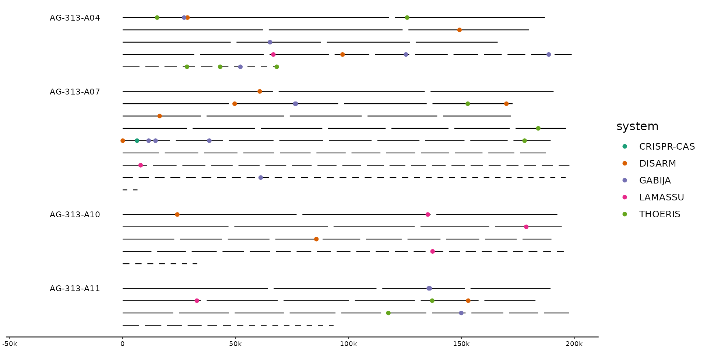
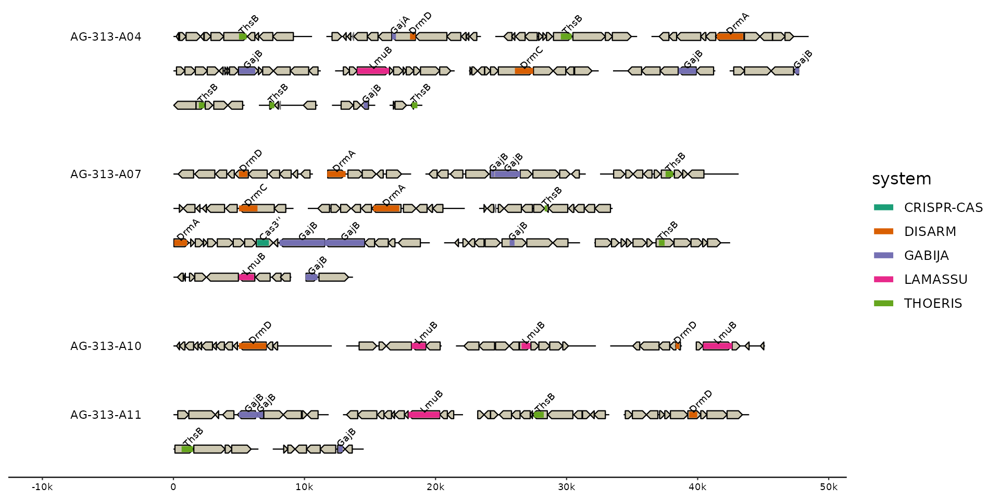
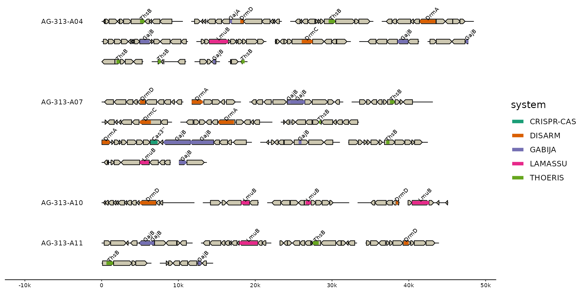

Show loci containing features of interest. Loci can either be provided
as predefined regions directly (loci=), or are constructed automatically
based on pre-selected features (via ...). Features within max_dist are
greedily combined into the same locus. locate() adds these loci as new
track so that they can be easily visualized. focus() extracts those loci
from their parent sequences making them the new sequence set. These sequences
will have their locus_id as their new seq_id.
Usage
focus(
x,
...,
.track_id = 2,
.max_dist = 10000,
.expand = 5000,
.overhang = c("drop", "trim", "keep"),
.locus_id = str_glue("{seq_id}_lc{row_number()}"),
.locus_id_group = seq_id,
.locus_bin = c("bin", "seq", "locus"),
.locus_score = n(),
.locus_filter = TRUE,
.loci = NULL
)
locate(
x,
...,
.track_id = 2,
.max_dist = 10000,
.expand = 5000,
.locus_id = str_glue("{seq_id}_lc{row_number()}"),
.locus_id_group = .data$seq_id,
.locus_bin = c("bin", "seq", "locus"),
.locus_score = n(),
.locus_filter = TRUE,
.locus_track = "loci"
)Arguments
- x
A gggenomes object
- ...
Logical predicates defined in terms of the variables in the track given by
.track_id. Multiple conditions are combined with ‘&’. Only rows where the condition evaluates to ‘TRUE’ are kept.The arguments in ‘...’ are automatically quoted and evaluated in the context of the data frame. They support unquoting and splicing. See ‘vignette("programming")’ for an introduction to these concepts.
- .track_id
the track to filter from - defaults to first feature track, usually "genes". Can be a quoted or unquoted string or a positional argument giving the index of a track among all tracks (seqs, feats & links).
- .max_dist
Maximum distance between adjacent features to be included into the same locus, default 10kb.
- .expand
The amount to nucleotides to expand the focus around the target features. Default 2kb. Give two values for different up- and downstream expansions.
- .overhang
How to handle features overlapping the locus boundaries (including expand). Options are to "keep" them, "trim" them exactly at the boundaries, or "drop" all features not fully included within the boundaries.
- .locus_id, .locus_id_group
How to generate the ids for the new loci which will eventually become their new
seq_ids.- .locus_bin
What bin to assign new locus to. Defaults to keeping the original binning, but can be set to the "seq" to bin all loci originating from the same parent sequence, or to "locus" to separate all loci into individual bins.
- .locus_score
An expression evaluated in the context of all features that are combined into a new locus. Results are stored in the column
locus_score. Defaults to then(), i.e. the number of features per locus. Set, for example, tosum(bitscore)to sum over all blast hit bitscore of per locus. Usually used in conjunction with.locus_filter.- .locus_filter
An predicate expression used to post-filter identified loci. Set
.locus_filter=locus_score >= 3to only return loci comprising at least 3 target features.- .loci
A data.frame specifying loci directly. Required columns are
seq_id,start,end. Supersedes....- .locus_track
The name of the new track containing the identified loci.
Value
A gggenomes object focused on the desired loci
A gggenomes object with the new loci track added
Functions
focus(): Identify regions of interest and zoom in on themlocate(): Identify regions of interest and add them as new feature track
Examples
# Let's hunt some defense systems in marine SAGs
# read the genomes
s0 <- read_seqs(ex("gorg/gorg.fna.fai"))
#> Reading 'fai' with `read_fai()`:
#> * file_id: gorg.fna [/home/runner/work/_temp/Library/gggenomes/extdata/gorg/gorg.fna.fai]
s1 <- s0 %>%
# strip trailing number from contigs to get bins
dplyr::mutate(bin_id = stringr::str_remove(seq_id, "_\\d+$"))
# gene annotations from prokka
g0 <- read_feats(ex("gorg/gorg.gff.xz"))
#> Reading 'gff3' with `read_gff3()`:
#> * file_id: gorg [/home/runner/work/_temp/Library/gggenomes/extdata/gorg/gorg.gff.xz]
#> Harmonizing attribute names
#> • ID -> feat_id
#> • Name -> name
#> • eC_number -> e_c_number
#> Features read
#> # A tibble: 3 × 3
#> source type n
#> <chr> <chr> <int>
#> 1 Aragorn:1.2 tRNA 62
#> 2 Prodigal:2.6 CDS 3268
#> 3 barrnap:0.6 rRNA 10
# best hits to the PADS Arsenal database of prokaryotic defense-system genes
# $ mmseqs easy-search gorg.fna pads-arsenal-v1-prf gorg-pads-defense.o6 /tmp \
# --greedy-best-hits
f0 <- read_feats(ex("gorg/gorg-pads-defense.o6"))
#> Reading 'blast' with `read_blast()`:
#> * file_id: gorg-pads-defense [/home/runner/work/_temp/Library/gggenomes/extdata/gorg/gorg-pads-defense.o6]
f1 <- f0 %>%
# parser system/gene info
tidyr::separate(seq_id2, into = c("seq_id2", "system", "gene"), sep = ",") %>%
dplyr::filter(
evalue < 1e-10, # get rid of some spurious hits
# and let's focus just on a few systems for this example
system %in% c("CRISPR-CAS", "DISARM", "GABIJA", "LAMASSU", "THOERIS")
)
# plot the distribution of hits across full genomes
gggenomes(g0, s1, f1, wrap = 2e5) +
geom_seq() + geom_bin_label() +
scale_color_brewer(palette = "Dark2") +
geom_point(aes(x = x, y = y, color = system), data = feats())

# hilight the regions containing hits
gggenomes(g0, s1, f1, wrap = 2e5) %>%
locate(.track_id = feats) %>%
identity() +
geom_seq() + geom_bin_label() +
scale_color_brewer(palette = "Dark2") +
geom_feat(data = feats(loci), color = "plum3") +
geom_point(aes(x = x, y = y, color = system), data = feats())
#> Adding 'loci' track. Plot with `geom_feat(data=feats(loci))`
 # zoom in on loci
gggenomes(g0, s1, f1, wrap = 5e4) %>%
focus(.track_id = feats) +
geom_seq() + geom_bin_label() +
geom_gene() +
geom_feat(aes(color = system)) +
geom_feat_tag(aes(label = gene)) +
scale_color_brewer(palette = "Dark2")
#> Showing 36 loci with the following size distribution
#> • min: 2500
#> • q25: 6464
#> • med: 9739
#> • q75: 10714
#> • max: 19561

# zoom in on loci
gggenomes(g0, s1, f1, wrap = 5e4) %>%
focus(.track_id = feats) +
geom_seq() + geom_bin_label() +
geom_gene() +
geom_feat(aes(color = system)) +
geom_feat_tag(aes(label = gene)) +
scale_color_brewer(palette = "Dark2")
#> Showing 36 loci with the following size distribution
#> • min: 2500
#> • q25: 6464
#> • med: 9739
#> • q75: 10714
#> • max: 19561
